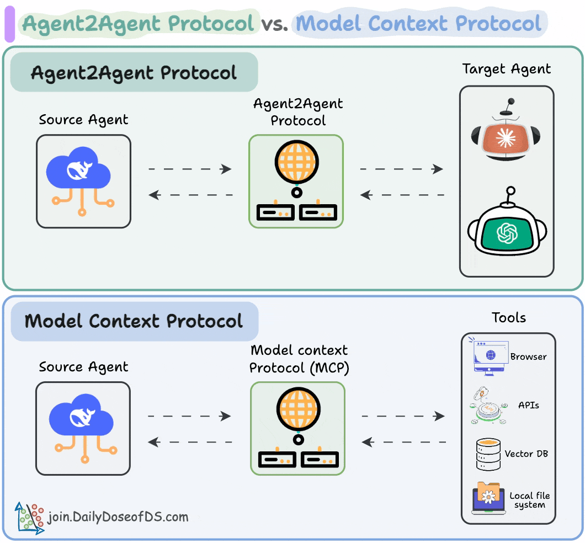

探討模型通訊協定的演進：從Function Calling到MCP再到Agent2Agent
隨著AI技術的發展，AI系統之間以及AI與外部世界的通訊方式也在不斷演進。從最初的簡單函數調用，到現在的複雜協同工作模式，我們可以看到AI通訊協定正朝著更加智能化、自主化的方向發展。以下我們將探討三種代表性的通訊模式及其各自的特點。
最早期的AI增強能力模式，允許語言模型識別何時需要調用外部函數來完成任務。
在Function Calling模式中，語言模型可以識別何時需要調用特定函數來執行它自己無法直接完成的任務，這是AI能力延伸的第一步。
想像您在高級餐廳就餐，向店員（LLM）詢問今天的天氣預報。服務員本身並不掌握這一資訊，但他知道應該查詢氣象站（函數/API）來獲取答案。服務員會離開片刻，撥打電話給氣象站，然後返回為您提供天氣資訊。這整個過程中，服務員知道：
Function Calling最大的特點是它的單向性 - LLM識別需求，調用函數，獲取結果，然後呈現給用戶。整個過程中，API只是被動地執行LLM的指令，而不會與LLM進行雙向的深度溝通。
更進階的雙向通訊協定，實現模型與工具間的深度上下文共享與協作。
MCP實現了模型與工具之間的雙向深度交流，不僅傳遞數據，還共享上下文、理解與推理過程。
如果將Function Calling比作服務員撥打電話查詢信息，那麼MCP則更像您有一位私人助理在為您協調多個專家團隊。想像您正計劃一次複雜的商務旅行，您的私人助理（LLM）不僅僅是簡單地向航空公司、酒店和會議場所發送單獨的請求，而是與這些服務提供者建立持續的對話。
在MCP模式下，私人助理可以：
MCP核心在於它實現了從「調用」到「對話」的範式轉變。工具不再只是被動執行命令，而是能夠提供反饋、提出建議並參與解決問題的過程。
智能代理間的直接通訊與協作模式，代表AI系統間的高度自主協作能力。
A2A代表了最高級別的AI通訊模式，智能代理之間可以直接溝通協作，共同解決複雜問題。
想像您正在籌備一場大型企業活動，您聘請了一位活動策劃師（Agent A）和一位餐飲顧問（Agent B）。在A2A模式下，這兩位專業人士不需要您作為中介，他們可以直接相互溝通、協調並解決問題。
例如：
A2A模式代表了AI系統走向真正自主性的重要一步。在這種模式下，每個智能代理都是具有特定專長的獨立實體，能夠基於共同目標進行有效協作。
| 特性 | Function Calling | MCP | A2A |
|---|---|---|---|
| 交互方式 | 單向調用 | 雙向對話 | 多向協作 |
| 上下文共享 | 有限 | 豐富 | 全面 |
| 自主程度 | 低 | 中 | 高 |
| 複雜度 | 簡單 | 中等 | 高 |
| 適用場景 | 特定任務執行 | 複雜問題解決 | 專業領域協作 |

這三種通訊模式代表了AI系統交互能力的演進階段，從最初的簡單工具使用（Function Calling），到更深入的對話式協作（MCP），再到高度自主的專業協作（A2A）。每一步都意味著AI系統在處理複雜任務、理解上下文和進行協作方面能力的提升。隨著技術的進步，我們可以預見更多元、更深入的AI通訊協定將不斷湧現。